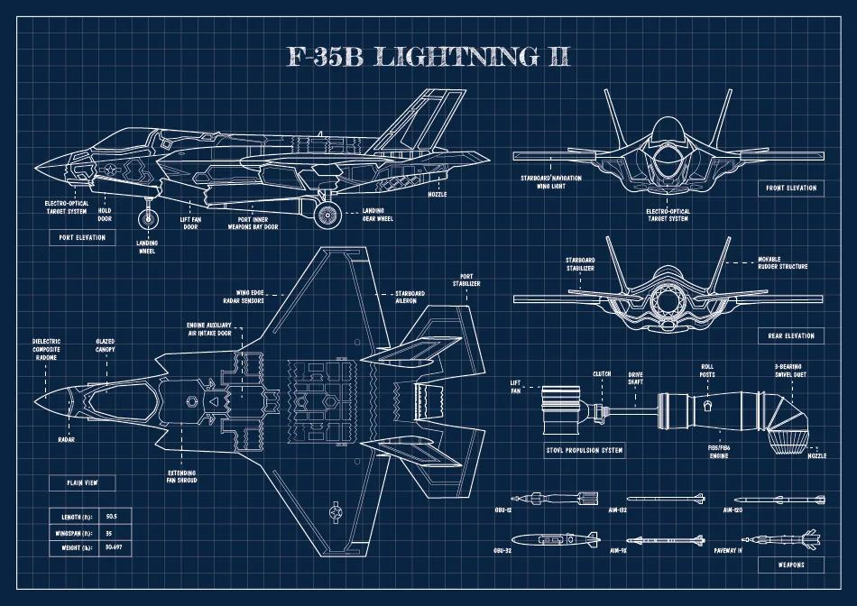
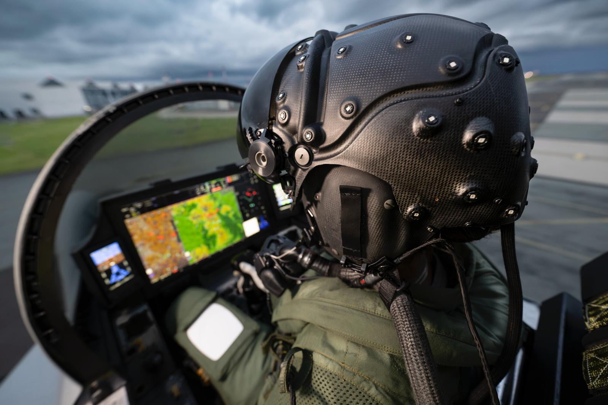

Interdisciplinarità dell’Aerospazio
Volare è una sfida che l’uomo affronta da sempre, e l’aerospazio è il punto in cui questa sfida prende forma. Ogni velivolo nasce dall’incontro di competenze diverse che dialogano tra loro: scienza, tecnologia e capacità umane si uniscono per superare i limiti della distanza, della velocità e dell’altitudine. In questo equilibrio complesso, nessuna disciplina lavora da sola. È la collaborazione tra ingegneria, fisica, matematica, biologia e informatica che rende possibile il volo moderno, trasformando idee e sogni in sistemi reali, affidabili e sicuri.

Ingegneria e Progettazione
Ogni aereo è il risultato di un progetto preciso, in cui materiali avanzati e soluzioni strutturali si combinano per garantire resistenza, leggerezza e prestazioni elevate. L’ingegneria traduce le leggi scientifiche in forme concrete, dando al volo una struttura capace di affrontare condizioni estreme.

Fisica e Matematica del Volo
Dietro la semplicità apparente del volo si nasconde un mondo fatto di forze, flussi e numeri. La fisica spiega il comportamento dell’aria e del movimento, mentre la matematica permette di prevedere traiettorie, simulare scenari e migliorare continuamente le prestazioni.

Uomo e Volo
Al centro di ogni sistema aerospaziale c’è l’uomo. La medicina aeronautica e la biologia studiano come il corpo umano reagisce alla quota, alle accelerazioni e allo stress del volo, per garantire che il pilota possa operare in sicurezza anche nelle condizioni più impegnative.

Tecnologia e Innovazione
Sistemi digitali, avionica avanzata e intelligenza artificiale affiancano il pilota, migliorando consapevolezza e controllo. La tecnologia non sostituisce l’uomo, ma ne amplifica le capacità, rendendo il volo sempre più sicuro, preciso ed efficace.